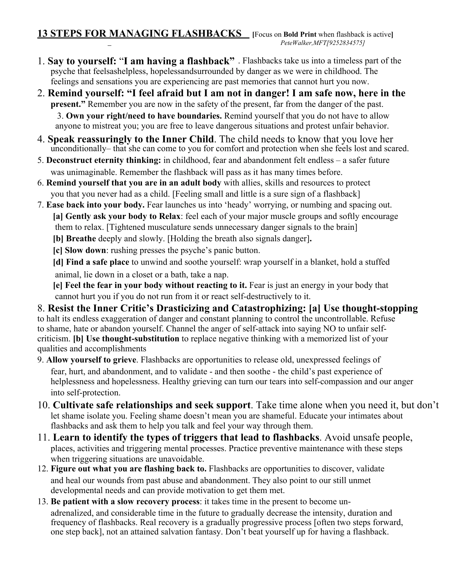

When Your Body Doesn’t Know You’re Safe
Relearning calm through science, practice, and compassion
Nervous System Regulation Tools:
When My Body Didn't Know We Were Safe
In early sobriety, my body was still at war. Heart pounding like I was sprinting — while sitting completely still. I'd look around for the threat and find nothing. Once I started actually paying attention, the triggers were almost embarrassingly mundane:
- Riding public transit
- Talking to strangers
- Sitting in a busy Starbucks
- Even lying in bed with no obvious trigger
- Last-minute lunch with a client
I bought a smartwatch. A few weeks in, the data was hard to ignore: resting heart rate spiking to 140 BPM — not "a little on edge," but physiologically equivalent to jogging. My body was running emergency protocols around the clock, and I'd learned to call it normal.
My nervous system had one setting: threat. Sometimes there was a reason. Often, there wasn't. In those moments, I started doing something that felt almost stupidly simple — pausing, checking in, and saying quietly: "I'm safe. I'm okay. I'm not in danger."
For years, I dismissed meditation, mindfulness, and grounding as "hippy bullshit." I was skeptical, guarded, and genuinely convinced that slow breathing wasn't going to fix a nervous system that had been running on adrenaline for decades.
In treatment the first time, I went through the motions. Eyes open during meditation, half-listening, internally checked out. The second time, I made a deliberate choice to stop performing compliance and actually try. That shift changed everything.
What broke through my resistance wasn't inspiration — it was mechanism. Once I understood that slow, controlled breathing directly activates the parasympathetic nervous system via the vagus nerve, that grounding interrupts the amygdala's threat response by redirecting sensory processing to the prefrontal cortex — it stopped feeling abstract. This is neuroscience, not wellness culture. And consistent practice doesn't just feel calmer; it produces measurable structural changes in the brain.
So I kept doing it. And slowly, my nervous system stood down.
That's why I built this page. The tools here are deliberately accessible — entry-level by design. But I've tried to ground each one in enough science that if you're the kind of person who needs to understand why before you'll commit to how, you'll find it here.
None of this erased the discomfort overnight. But naming what was happening — and what wasn't — kept things from spiralling. And over time, the sensations that once felt unbearable started to feel survivable. Then manageable. Then small.
This work is hard. It's also real. The more you understand why these tools work, the harder it becomes to talk yourself out of using them.
Trauma, Addiction, and the Nervous System
Trauma doesn't just leave emotional wounds — it recalibrates the nervous system. The result is a dysregulated baseline: cycling between hyperarousal (fight/flight) and hypoarousal (freeze/shutdown), with very little stable ground between them. Addiction fills that gap. Alcohol to mute the volume. Stimulants to turn it back up. Substances become a surrogate nervous system — crude, costly, and borrowed. Learning to regulate without them isn't a coping strategy. It's reclaiming the controls.
How Regulation Rewires the Brain
These tools work by interrupting the brain's threat detection loop — specifically, by shifting activity away from the amygdala (which flags danger) and toward the prefrontal cortex (which evaluates it). A dysregulated nervous system isn't broken. It's over-trained. It learned to stay ready because staying ready once kept you alive.
Regulation is the process of teaching it that the threat has passed. Each deliberate breath, each grounding moment, each time you track a feeling instead of reacting to it — you're not just coping. You're laying down new circuitry. Neuroscience calls this experience-dependent neuroplasticity. In practice, it means the brain can actually learn calm — if you repeat it enough times to make it the default.
Aim Small, Miss Small Learning to Rate My Emotions
The moment I stopped treating emotions like emergencies and started treating them like data, I stopped being at their mercy.
In treatment, every session started the same way: what are you feeling, and how strong is it? I hated it. It felt like busywork dressed up as therapy — a pointless ritual everyone performed to look like they were doing the work.
So I kept going through the motions. Anxiety 8, sadness 4, guilt 7. Over and over, session after session. And then something quietly shifted. I'd spent most of my life treating emotions like binary switches: anger on/off, shame on/off, fear on/off. If something was "on," it was urgent. It demanded a response — or a way out. That's not emotional awareness. That's a hair trigger.
Once I started rating intensity, the picture changed completely. The feeling that had seemed overwhelming might be a 3. The surge I'd have chased or drowned might just be a 5 — real, but not an emergency. That small act of precision created something I'd never had before: a gap. Enough space to ask: "Does this actually require a response right now?"
Most of the time, the honest answer was no. Aim small, miss small. Not every internal signal is a command. Some emotions need action. Most just need to be named, rated, and left alone.
That's what this practice does: it turns the noise into signal. And once you can read the signal clearly, you stop reacting to the noise.
Regulation in Action
The tools. What to do. Why it works.
Download the Regulation Tools PDF ↓
Printable, quick-reference version for real-life use.
-
A Note of Caution
Not every tool works for every nervous system — and with a trauma history, some can backfire. Breath-holding, extended body scans, or certain physical sensations can feel destabilising or triggering rather than calming. If a technique spikes your anxiety or makes you feel trapped, stop. That's not failure. That's your system giving you accurate information.
When in doubt, go simpler: look around the room and name five objects, feel both feet flat on the floor, or take a short walk outside. The goal is never to push through — it's to restore a felt sense of safety. Any tool that makes your body feel less safe is the wrong tool, at least right now. Work with a trauma-informed therapist to identify which approaches suit your specific system.
Twenty-one of them, grouped. If you’re in it right now, start with the first row.
- In-the-Moment Tools (Under 5 Minutes)
- Daily Habits That Build a Regulated Baseline
- Daily Emotion Tracking (Aim Small, Miss Small)
- Regulation Through the Senses
- Co-Regulation: Using Other People's Nervous Systems
-
In-the-Moment Tools (Under 5 Minutes)
-
4-7-8 Breathing
Inhale through your nose for 4 counts → hold for 7 → exhale fully through your mouth for 8. Do this 3–4 cycles. The long exhale is the active ingredient — it directly stimulates the vagus nerve and signals your heart rate to slow.
-
5-4-3-2-1 Grounding
Name 5 things you can see, 4 you can physically feel, 3 you can hear, 2 you can smell, 1 you can taste. Say them aloud if you can. This pulls sensory processing back online and interrupts the amygdala's threat loop by redirecting attention to the present environment.
-
Cold Water Reset
Splash cold water on your face or hold an ice pack to your cheeks and forehead for 30–60 seconds. Cold on the face activates the mammalian dive reflex — a hard-wired physiological response that slows heart rate and reduces acute panic within seconds.
-
Progressive Muscle Release
Work through one muscle group at a time — jaw, shoulders, hands, thighs. Tense deliberately for 5 seconds, then release completely. The release phase signals to your brain that your body is no longer bracing for impact.
When your body is already in it — heart pounding, chest tight, thoughts racing — you need something that works on the body directly, not through thinking:
The common mechanism: Each of these tools works by sending a bottom-up signal — body to brain — that overrides the threat state. You are not thinking your way calm. You are physiologically inducing it.
-
4-7-8 Breathing
-
Daily Habits That Build a Regulated Baseline
-
Morning body scan
→ Before you check your phone, do a slow scan from head to toe. Notice tension, heaviness, or restlessness. Gently breathe into those areas or stretch them out. This trains early awareness — catching stress at a 3 instead of an 8.
-
Gentle, rhythmic movement
→ Walking, tai chi, yoga, or slow dancing in your kitchen. Rhythmic, bilateral movement (left-right, left-right) is particularly effective at discharging stored stress and resetting the autonomic nervous system. Gentle and consistent beats intense every time.
-
Consistent sleep and wake times
→ Pick a rough window and protect it most days. Irregular sleep disrupts cortisol rhythms and keeps the nervous system in a low-grade state of readiness — essentially primed for anxiety before the day even starts.
-
Two minutes of breath practice
→ Set a timer. Do one simple exercise — box breathing, slow exhale, or just counting breaths. Even two minutes daily, done consistently, builds autonomic flexibility: the ability to shift states more easily when you need to.
These don't produce an immediate effect — that's not the point. Done consistently, they raise the floor of your nervous system so spikes happen less often and recovery happens faster:
Why it works: A dysregulated nervous system is one that's lost its range — stuck high, stuck low, or oscillating wildly. These habits rebuild that range. Predictability and repetition are the inputs. A steadier baseline is the output.
-
Morning body scan
-
Daily Emotion Tracking (Aim Small, Miss Small)
-
Pause for 10–20 seconds
and ask: "What am I actually feeling right now?"
-
Name it
— even roughly. "Anxious," "flat," "irritated and tired." Approximate is fine. Naming an emotion reduces amygdala activation. The label doesn't need to be perfect to be useful.
-
Rate the intensity
on a 0–10 scale. This is the critical step. It transforms a vague internal state into a data point — and lets you hold it up against what's actually happening around you.
-
Note three quick details
where you are, what you're doing, who you're with. Over time, these become the pattern.
-
Log it
— notebook, notes app, or the free app How We Feel, which is built specifically for this. It's my personal favorite, and it's totally free.
Most people in early recovery have poor emotional granularity — they can feel that something is wrong, but can't tell how wrong, or why. This practice fixes that. And if you catch it in real time — a sudden spike of anger, sadness, or anxiety mid-situation — it can do something even more useful: expose the mismatch.
I'd be in the middle of something completely mundane and clock that I was sitting at a 7. Then I'd look around — and nothing was actually wrong. That gap between what I was feeling and what was actually happening was the whole lesson. Once you can see the mismatch clearly, intense emotions lose a lot of their authority. That little thing made me feel like this? Come on. It doesn't make the feeling disappear, but it creates enough distance to stop treating it like a command.
Why it works: You stop operating on binary signals — on/off, calm/crisis — and start working with actual information. A 3 and an 8 stop getting the same response. When you catch the mismatch in real time — a disproportionate reaction to something small — naming and rating it can dissolve the intensity almost immediately. Patterns also emerge over time: times, places, people, situations. You stop being surprised by your own nervous system.
The science: UCLA researcher Matthew Lieberman found that putting a feeling into words — affect labeling — measurably reduces amygdala activation and increases prefrontal cortex engagement. The rating step adds metacognitive distance: the ability to observe an emotion rather than be inside it. Psychologist Lisa Feldman Barrett's research on emotional granularity shows that people who can distinguish between closely related emotional states recover faster and make better decisions under stress. The log isn't journaling. It's training your brain to treat internal states as data rather than commands.
Recommended: The free app How We Feel was developed with input from emotion researchers and takes about 10 seconds per check-in. It tracks mood, context, and patterns over time — and it's genuinely good. Paper works too. The format matters less than the consistency.
Tracking doesn't change what you feel. It changes your relationship to it — and that's where regulation actually starts.
-
Pause for 10–20 seconds
-
Regulation Through the Senses
-
Weighted blanket / deep pressure
→ Even pressure across the body activates the parasympathetic nervous system through mechanoreceptors in the skin. Use a weighted blanket or heavy comforter and let it settle around you for 5–10 minutes.
-
Scent
→ Olfactory input bypasses the thalamus and connects directly to the limbic system — the emotional brain. This makes scent one of the fastest routes to a state shift. Lavender, chamomile, and citrus are commonly used; find what works for yours.
-
Sound
→ Predictable, low-variability sound (rain, white noise, slow music) reduces the nervous system's urge to scan for threats. Erratic or loud audio has the opposite effect. Match the sound to the state you're trying to move toward.
-
Soft visual focus
→ Fix your gaze gently on something slow and low-stakes — a candle, an aquarium, trees moving outside. Sustained soft focus activates the ventral vagal system and signals that active threat-scanning is no longer required.
When cognitive tools fail — when you're too activated to think clearly — the nervous system can still be reached through sensory input. This is not a workaround. It's a direct line:
Why it works: Sensory input reaches the nervous system before conscious thought does. When arousal is high enough that cognition is impaired, this is often the only tier of regulation that's still accessible. Start here, then think.
-
Weighted blanket / deep pressure
-
Co-Regulation: Using Other People's Nervous Systems
-
Safe connection
→ Call someone you actually trust. Hug a pet. Have a brief, low-stakes conversation with someone who feels calm. Physical or vocal proximity to a regulated nervous system is often enough to begin shifting your own.
-
Soft eye contact and warm expression
→ With safe people only: allow gentle eye contact and a relaxed face while breathing slowly. The polyvagal system reads facial cues and prosody (voice tone) as primary safety signals — faster than words.
-
Pace your voice
→ Speak slower and softer than you feel like speaking. Your own voice tone feeds back into your nervous system. A calmer delivery can begin to produce a calmer state.
-
Synchrony
→ Walk at the same pace, sit and breathe together, or simply be in the same room as someone calm. Physiological synchrony between people is measurable and real — nervous systems do entrain to each other.
Self-regulation gets most of the attention, but it's not where regulation starts developmentally — and for many trauma survivors, it's not where it's most accessible. We are wired to regulate through each other first:
Why it works: The social engagement system — facial expression, eye contact, voice prosody, touch — is the nervous system's primary downregulation pathway. It evolved before self-regulation did. For trauma survivors who learned that people aren't safe, building even one or two genuinely safe relationships is not a luxury. It's a clinical priority.
On Sound and Co-Regulation: A Personal Note
Music can function as a form of co-regulation — particularly tracks with slow tempo, smooth transitions, and minimal abrupt changes. The human voice, even recorded, activates the social engagement system. This is part of why certain music reliably shifts emotional states.
Weightless by Marconi Union is frequently cited in this context — it was designed in consultation with sound therapists and has been studied for its effects on anxiety. But the principle matters more than the specific track. Personally, Ra Ma Da Sa by Snatam Kaur works better for me. Find what reliably moves your system and use that.
Two starting points:
The metric is simple: does it help your body soften? If yes, use it. The label doesn't matter.
-
Safe connection
-
When You're Already In It: Pete Walker's 13 Steps for Managing Flashbacks
This one is different from everything else on this page. The tools above are regulation tools — useful for building a calmer baseline, intercepting early arousal, and training your nervous system over time. This is for when that window has already closed. When you're already inside a flashback and you need something to hold onto.
Pete Walker's 13 Steps were developed specifically for Complex PTSD — not general anxiety, not everyday stress, and not the kind of trauma a single incident leaves behind. C-PTSD is what happens when the threat was relentless, ongoing, and usually came from the people who were supposed to keep you safe. The flashbacks it produces aren't always cinematic. Often they're emotional — a sudden, overwhelming return to the helplessness, shame, or terror of the original environment, with no obvious trigger you can name.
This resource likely hasn't been handed to you in most treatment settings. It isn't typically part of standard AHS programming or group curriculum — not as a criticism, but as a reflection of how rarely C-PTSD-specific tools make it into the room, even when they're needed most.
If you have a complex trauma history and you haven't come across this before, it's worth reading slowly. More than once.

Download — 13 Steps for Managing Flashbacks (PDF) ↓
Pete Walker — used with permission.
“Every time you choose calm over chaos,
you are literally rewiring your nervous system.”
— Dr. Nicole LePera
Why This Actually Works
These tools are not self-help filler. They work because they operate on the nervous system directly — beneath the level of thought, below the reach of willpower. That's the part that matters for trauma survivors and people in recovery: you cannot think your way out of a physiological threat response. But you can interrupt it. And if you interrupt it enough times, consistently enough, you begin to change it.
Breathwork: Slow, extended exhales increase heart-rate variability (HRV) — a direct measure of how flexibly your autonomic nervous system responds to stress. Higher HRV means faster recovery, better emotional regulation, and a lower resting threat state.
Grounding and sensory input: These redirect the brain's processing away from internal alarm signals and toward stable, present-moment cues. They give the amygdala something real to evaluate — and it usually concludes the room is not, in fact, on fire.
Repetition: Every time you regulate — even imperfectly — you reinforce a slightly different neural pathway. Neuroscience calls this experience-dependent neuroplasticity. In practice it means: the more often you choose regulation, the more available it becomes. Calm becomes a learned state, not a lucky one.
Research snapshot: Controlled breathing and sensory grounding have been shown to reduce hyperarousal and interrupt the trauma defence cascade — shifting the autonomic nervous system toward homeostatic regulation and measurably reducing symptom severity in trauma and anxiety populations.
(Streeter et al., 2012; Schauer & Elbert, 2010)
If you've spent years feeling like your body was working against you — like calm was something other people had access to and you didn't — that's not a character flaw. It's a trained response. And trained responses can be retrained.
That's the whole point of this page. Not to convince you that breathing exercises will fix everything. But to make the case — backed by mechanism, not just optimism — that your nervous system is not fixed. It's plastic. It's responsive. And every time you interrupt the old pattern and choose something different, you are doing the actual work of recovery.
You don't need to believe it will work. You just need to do it enough times to find out that it does.
Where to Next?
Follow the next step in order, or branch out into related topics.
- Zaccaro, A., et al. (2018). How breath-control can change your life: a systematic review on psycho-physiological correlates of slow breathing. Frontiers in Human Neuroscience, 12, 353. Systematic review of 15 studies on voluntary slow breathing (<10 breaths/min) — finding consistent evidence that slow breathing increases vagal tone, reduces blood pressure and cortisol, and activates the parasympathetic nervous system. Effects occur within minutes and build with sustained practice, establishing breath control as a physiologically grounded intervention rather than wellness folklore. View on PubMed
- Hölzel, B. K., et al. (2011). Mindfulness practice leads to increases in regional brain gray matter density. Psychiatry Research: Neuroimaging, 191(1), 36–43. Also: Lazar, S. W., et al. (2005). Meditation experience is associated with increased cortical thickness. NeuroReport, 16(17), 1893–1897. Hölzel et al. documented MRI-measured gray matter increases after an 8-week MBSR program, with corresponding reductions in amygdala density correlated with reduced stress. Lazar et al. showed meditators had measurably thicker cortex in attention and interoception regions. Together they establish that mindfulness produces structural brain changes — not metaphor, measurable neurology. View Hölzel et al. on PubMed · View Lazar et al. on PubMed
- Rauch, S. L., Shin, L. M., & Phelps, E. A. (2006). Neurocircuitry models of posttraumatic stress disorder and extinction: human neuroimaging research — past, present, and future. Biological Psychiatry, 60(4), 376–382. Reviews the neurocircuitry of threat processing — documenting the amygdala-PFC inhibitory relationship and how sensory grounding techniques work by recruiting alternative inputs that activate PFC appraisal processes, interrupting the amygdala's threat loop. Establishes grounding as a neurophysiological intervention, not a distraction technique. View on PubMed
- Porges, S. W. (2011). The Polyvagal Theory: Neurophysiological Foundations of Emotions, Attachment, Communication, and Self-Regulation. Norton. The foundational framework for understanding why safe social engagement, breath, and sensory input regulate the autonomic nervous system — explaining the neurophysiological basis for every tool on this page and why the body, not just the mind, must be engaged in recovery. View on Goodreads
- Brown, R. P., & Gerbarg, P. L. (2005). Sudarshan Kriya yogic breathing in the treatment of stress, anxiety, and depression: Part II — clinical applications and guidelines. Journal of Alternative and Complementary Medicine, 11(4), 711–717. Clinical applications of yogic breathing techniques — documenting their utility in anxiety, depression, and post-trauma stabilization, providing a clinical complement to the physiological evidence in Zaccaro et al. View on PubMed
These sources explain how slow breathing, mindfulness, and sensory grounding regulate the autonomic nervous system, reduce hyperarousal, and produce measurable brain changes in trauma recovery. Educational only — not medical advice.